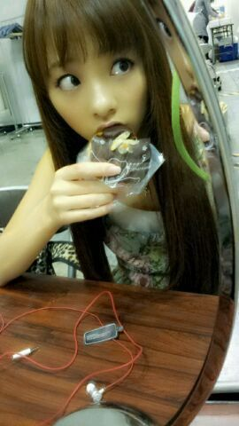
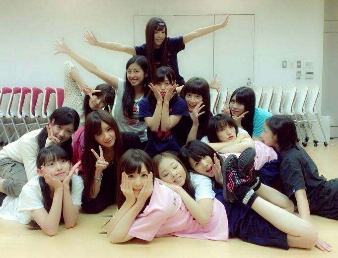

ほっほーい♪
ろってぃです ! ))
今日はお仕事に行く前
大きなエクレアを
食べたの〜(*〃ゞ〃)
あっ、ちょ-ど
握手会の時 裏で
エクレア食べてる時の
写メがあったわ〜♪

昨日は、
生写真の撮影だったり‥
その他 色々と
撮ったよ〜
(* `・ω・)PashaPasha★!!
皆で一斉に撮るから
１日かかったよ´ω`))
でも 楽しかったんよ。
その後 リハとかも
あったりしてね‥♪
あっ、仕事の合間に
待ち時間があって
1時間半,せいたんと
カラオケに行ってきたよ。
せいらとのカラオケ
楽しかったよ〜´ω`))
そして今日は
ミュージックジャパンの
収録でしッ`・ω
★☆★
何やろなぁ〜
新曲かなぁ〜
何したんやろなぁ〜?
いひひぃ〜 〃ω〃笑
んでわっ!!
今日も１日皆様
お疲れ様でしたあ*´ω`*
おやすみなさい‥。
のし
